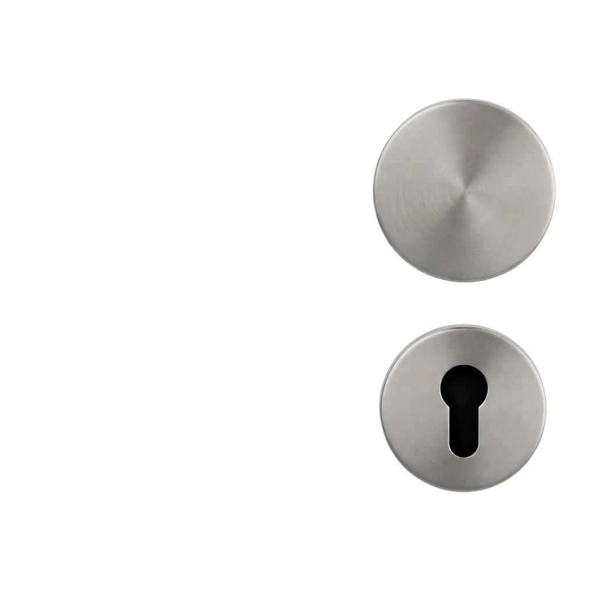
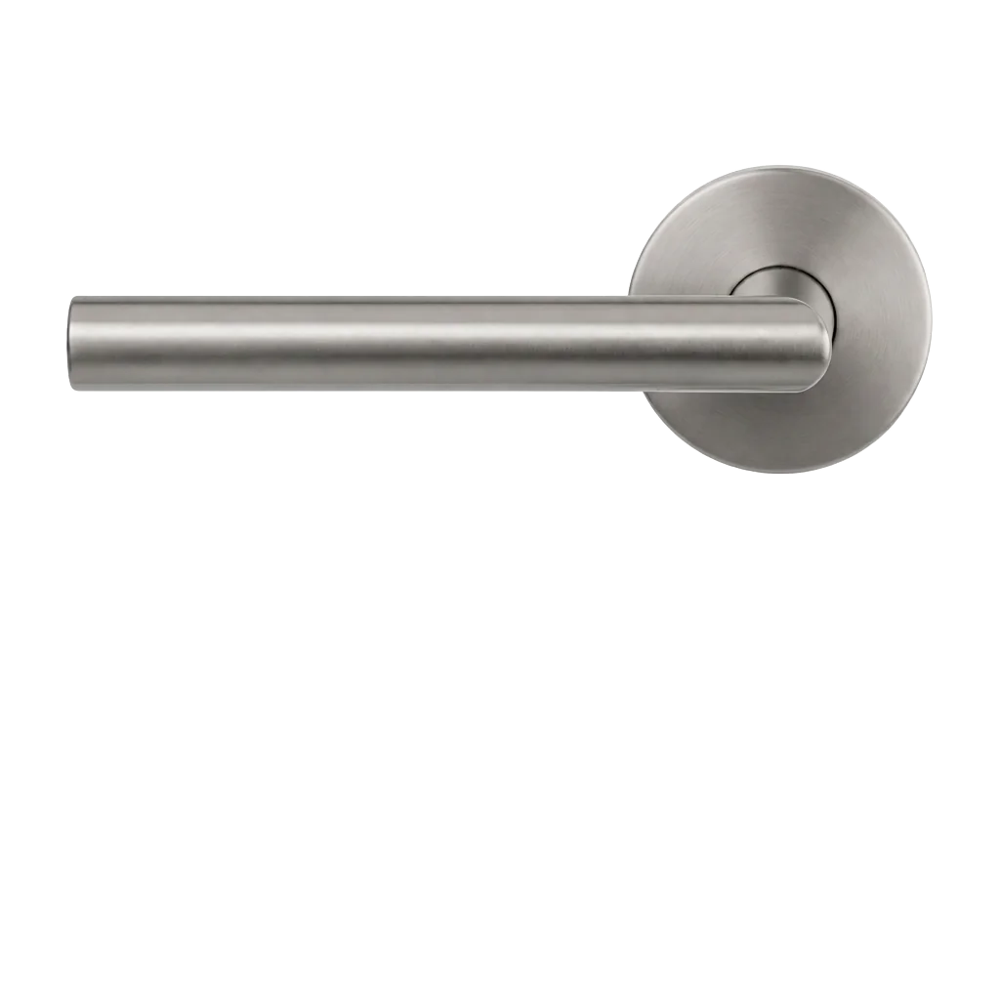

Vendez votre bien avec l’agence qui fait tourner les têtes.
Maisons, appartements et villas à Liège, en province et à Bruxelles. Estimation gratuite sur place, mise en scène soignée et négociation jusqu’à la signature chez le notaire.
- Réponse sous 48 h
- Honoraires annoncés d’emblée
- Agent agréé IPI 511.321


- 80+communes couvertes
- 48 hpour une estimation écrite
- 0 €de frais photo ou pub
- 2villes : Liège & Bruxelles
Nos biens à vendre
Le Format Libre
Le Sacre de l’Été
La Ligne Claire
Le rapport parfait
La maison du bricoleur
Le Jardin secret
Une vente n’est jamais le fruit du hasard.
Quand quelque chose attire vraiment l’attention, on tourne la tête. Quand les regards se croisent, la séduction commence. Notre rôle est de transformer cette première émotion en intérêt, puis cet intérêt en coup de cœur.
Chez avendr., nous mettons en lumière tout ce qui rend votre bien unique et désirable. Parce qu’une vente est avant tout une rencontre.
Votre bien mérite mieux qu’une annonce banale
Estimation sur place
Visite gratuite et fourchette de prix écrite sous 48 h, sans engagement.
Mise en scène éditoriale
Photos et textes soignés, diffusion sur les portails immobiliers belges.
Négociation jusqu’à l’acte
Nous défendons votre prix et vous accompagnons jusqu’à la signature chez le notaire.
Simulez avant de décider
Agence immobilière à Liège, en province et à Bruxelles
Vente de maisons, appartements, villas, fermettes et terrains dans toute la province de Liège et dans les 19 communes de la Région bruxelloise.
Questions fréquentes
Combien prend une agence immobilière en Belgique ?
Généralement entre 2 % et 4 % HTVA du prix de vente. Chez avendr., le pourcentage est annoncé dès le premier rendez-vous, sans frais de photo ni de publicité en supplément.
L’estimation de ma maison est-elle gratuite ?
Oui : visite sur place et fourchette de prix écrite sous 48 h, sans engagement.
Où trouver vos maisons à vendre ?
Tous nos biens disponibles sont listés sur la page « Biens », filtrables par ville, code postal, budget et rayon.
Parlons de votre projet
Une estimation, une question, une visite ? Répondez-nous en quelques lignes, nous revenons vers vous rapidement.
info@avendr.be+32 (0)47 207 47 47
Liège & Bruxelles